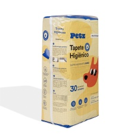
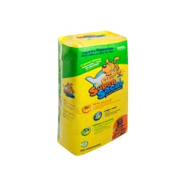

Higiene e Limpeza
Tapetes higiênicos, fraldas e outros produtos de limpeza para o seu pet.
Tapete Higiênico Petz para Cães Superabsorvente 30 Unidades

- Indicado para cães;
- Supermacio;
- Tecnologia para máxima absorção com extra gel;
- Proteção contra vazamentos;
- Atrativo canino;
- Adesivo no verso dos tapetes para melhor fixação, tanto no chão, quanto na parede;
- Ideal para todos os ambientes;
- Disponível em embalagem com 30 unidades.
Valor: R$ 89,99
Tapete Higiênico Super Secão Max Citrus Slim para Cães

- Indicado para cães;
- Mais fininho e fácil de guardar;
- Ideal para quem faz trocas mais frequentes do tapete no ambiente;
- Alças no pacote que facilitam para levar para qualquer lugar;
- Gel superabsorvente;
- Atrativo canino que faz com que o seu pet encontre o tapete e tenha vontade de fazer xixi nele;
- Fitas adesivas em todas as extremidades do tapete, que podem ser coladas no piso ou na parede, caso seu pet levante a pata para fazer xixi;
- Cheirinho de citrus que perfuma o ambiente;
- Abas laterais reduzidas e mais espaço de absorção;
- Mantém a sua casa sempre limpa, sem patas molhadas pelo chão;
- Disponível em embalagem com 30 unidades.
Valor: R$ 0,00